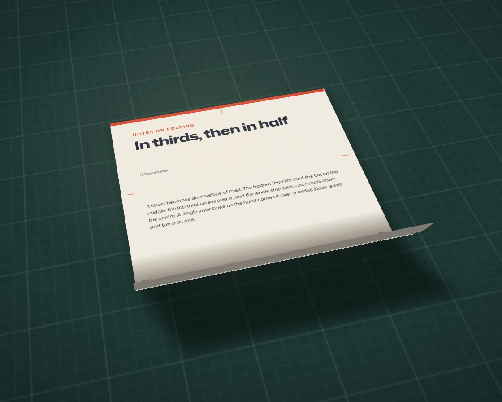

Paper fold
Paper fold is a DOM effect: nested CSS 3D hinges, shaded from their true normals. One plain JavaScript file with no dependencies; add it with npx motion-library add paper-fold.

Open it live, tune it and copy the code
What is Paper fold?
A printed sheet folds in thirds and then in half, with creases that catch the lamp.
How does Paper fold work?
Nested preserve-3d panels with backface-visibility hidden; each face’s normal is turned through its hinges in JavaScript and compared with the lamp for shading.
How do I add Paper fold to my website?
- In your project folder, run
npx motion-library add paper-fold. It writesanimations/paper-fold.js. Needs Node 18 or newer. - Import it and call it with a container element that has a size:
import fx from './animations/paper-fold.js'; const stop = fx(document.querySelector('#hero')); - Call
stop()to clean up, for example when a component unmounts.
Every setting below is also a flag, so you can install it already tuned: npx motion-library add paper-fold --cycle 20.
What settings can I tweak?
| Setting | Flag | Default | Range | Step |
|---|---|---|---|---|
| Cycle (s) | --cycle | 9 | 4 to 20 | 0.5 |
| Table tilt (deg) | --tilt | 46 | 0 to 70 | 1 |
| Crease shading | --crease | 1 | 0 to 2 | 0.05 |
Specifications
- Renderer
- DOM (CSS and the Web Animations API)
- Category
- Chrome & 3D
- Dependencies
- None
- File size
- 12.5 KB, unminified
- Interactive
- No: it plays on its own
- Reduced motion
- Plays the same for everyone
- Licence
- MIT-0: use it anywhere, no credit needed
Source code
// Paper fold: a printed letter folded the way you would post it, in real CSS 3D. The sheet is six panels
// on nested hinges (two halves, each with three rows): the bottom third folds up, the top third folds down
// over it, the strip folds in half, then it all opens again. Every panel is shaded from its true 3D normal
// against a desk lamp, creases darken on the inside and catch light on the outside, and stay faintly marked.
const PARAMS = { cycle: 9, tilt: 46, crease: 1 };
export default function (stage) {
const root = document.createElement('div');
root.style.cssText = 'position:absolute;inset:0;overflow:hidden;background:#13201f';
const paper = `url("data:image/svg+xml,${encodeURIComponent("<svg xmlns='http://www.w3.org/2000/svg' width='180' height='180'><filter id='n'><feTurbulence type='fractalNoise' baseFrequency='.85' numOctaves='3' stitchTiles='stitch'/><feColorMatrix values='0 0 0 0 .35 0 0 0 0 .3 0 0 0 0 .22 0 0 0 .09 0'/></filter><rect width='100%' height='100%' filter='url(#n)'/></svg>")}")`;
root.innerHTML = `
<style>
.pf-scene{position:absolute;left:50%;top:51%;width:0;height:0;transform-style:preserve-3d}
.pf-mat{position:absolute;transform:translateZ(-3px);
background:linear-gradient(rgba(220,255,240,.11) 1px,transparent 1px) 0 0/calc(var(--g)*5) calc(var(--g)*5),
linear-gradient(90deg,rgba(220,255,240,.11) 1px,transparent 1px) 0 0/calc(var(--g)*5) calc(var(--g)*5),
linear-gradient(rgba(220,255,240,.045) 1px,transparent 1px) 0 0/var(--g) var(--g),
linear-gradient(90deg,rgba(220,255,240,.045) 1px,transparent 1px) 0 0/var(--g) var(--g),#1c3633}
.pf-shadow{position:absolute;background:rgba(4,10,9,.9);filter:blur(calc(var(--h)*.025));border-radius:2px;transform-origin:0 0}
.pf-sheet,.pf-half,.pf-p{position:absolute;transform-style:preserve-3d}
.pf-face{position:absolute;inset:-.5px;overflow:hidden;backface-visibility:hidden;-webkit-backface-visibility:hidden;background:${paper},#f3efe6}
.pf-back{transform:rotateY(180deg);background:repeating-linear-gradient(45deg,rgba(60,90,140,.07) 0 1px,transparent 1px 4px),repeating-linear-gradient(-45deg,rgba(60,90,140,.05) 0 1px,transparent 1px 4px),${paper},#ebe7de}
.pf-art{position:absolute;width:var(--w);height:var(--h);font-family:"Mona Sans",system-ui,sans-serif;color:#1b2233}
.pf-o{position:absolute;inset:0;opacity:0;pointer-events:none}
.pf-dk{background:#1a120c}.pf-lt{background:#fff8ec}
.pf-c{position:absolute;opacity:0;pointer-events:none}
.pf-band{position:absolute;left:0;right:0;top:0;height:1.3%;background:#d8452b}
.pf-kick{position:absolute;left:9%;top:6.5%;font:650 calc(var(--h)*.017)/1 "Mona Sans";letter-spacing:.16em;text-transform:uppercase;color:#d8452b}
.pf-title{position:absolute;left:9%;top:10%;width:74%;font:760 calc(var(--h)*.054)/1 "Mona Sans";font-stretch:112%;letter-spacing:-.025em}
.pf-date{position:absolute;left:9%;top:25.5%;font:500 calc(var(--h)*.016)/1 "Mona Sans";color:#717480}
.pf-txt{position:absolute;left:9%;right:9%;font:430 calc(var(--h)*.0172)/1.6 "Mona Sans";color:#2e3342;margin:0}
.pf-tick{position:absolute;background:#d8452b;opacity:.55}
.pf-sig{position:absolute;left:8%;top:85.5%;width:24%}
.pf-diag{position:absolute;right:9%;top:82%;width:14%}
.pf-lamp{position:absolute;inset:0;pointer-events:none;background:radial-gradient(60% 55% at 42% 36%,rgba(255,236,205,.13),transparent 70%),radial-gradient(130% 110% at 50% 45%,transparent 38%,rgba(0,0,0,.62))}
</style>
<div class="pf-scene"><div class="pf-mat"></div><div class="pf-shadow"></div><div class="pf-sheet"></div></div><div class="pf-lamp"></div>`;
stage.append(root);
const scene = root.querySelector('.pf-scene'), mat = root.querySelector('.pf-mat'), shadow = root.querySelector('.pf-shadow'), sheet = root.querySelector('.pf-sheet');
// the printed side: one full-size layout, cropped into each panel
const ART = `<div class="pf-band"></div><div class="pf-kick">Notes on folding</div><div class="pf-title">In thirds, then in half</div><div class="pf-date">9 November</div>
<p class="pf-txt" style="top:38.5%">A sheet becomes an envelope of itself. The bottom third lifts and lies flat on the middle, the top third closes over it, and the whole strip folds once more down the centre. Each panel is a flat plane hinged at a crease; nothing bends, so the light has to do the work.</p>
<p class="pf-txt" style="top:68.5%">Where a panel turns away from the lamp it darkens, and where two panels meet the crease holds a little shadow. Open it again and the creases stay, faintly, like a memory of the shape.</p>
<svg class="pf-sig" viewBox="0 0 120 40" fill="none" stroke="#24304f" stroke-width="1.6" stroke-linecap="round"><path d="M4 28c8-14 14-22 18-20s-6 22-2 22 10-16 14-15-3 13 1 13 7-9 11-9-2 8 2 8 9-12 14-12c4 0-3 11 2 11 6 0 14-9 22-9s14 4 30 2"/></svg>
<svg class="pf-diag" viewBox="0 0 60 76" fill="none" stroke="#2e3342" stroke-width="1.2"><rect x="6" y="4" width="48" height="66" rx="1"/><path d="M6 26h48M6 48h48M30 4v66" stroke-dasharray="3 3" stroke="#d8452b"/></svg>
<i class="pf-tick" style="left:2.5%;top:33.33%;width:3%;height:1px"></i><i class="pf-tick" style="right:2.5%;top:33.33%;width:3%;height:1px"></i>
<i class="pf-tick" style="left:2.5%;top:66.67%;width:3%;height:1px"></i><i class="pf-tick" style="right:2.5%;top:66.67%;width:3%;height:1px"></i>
<i class="pf-tick" style="left:50%;top:1.8%;width:1px;height:2.2%"></i><i class="pf-tick" style="left:50%;bottom:1.5%;width:1px;height:2.2%"></i>`;
// build: two halves, three rows each; every panel has a printed front and a tinted back
const halves = [0, 1].map(h => { const d = document.createElement('div'); d.className = 'pf-half'; sheet.append(d); return d; });
const panels = [], faces = [];
const edge = { top: 'linear-gradient(to bottom,C,transparent)', bottom: 'linear-gradient(to top,C,transparent)', left: 'linear-gradient(to right,C,transparent)', right: 'linear-gradient(to left,C,transparent)' };
for (let h = 0; h < 2; h++) for (let r = 0; r < 3; r++) {
const p = document.createElement('div'); p.className = 'pf-p'; halves[h].append(p);
const sides = []; // which creases touch this panel: [side as seen on the front, crease id]
if (r === 0) sides.push(['bottom', 1]); if (r === 1) sides.push(['top', 1], ['bottom', 0]); if (r === 2) sides.push(['top', 0]);
sides.push([h === 0 ? 'right' : 'left', 2]);
for (const back of [false, true]) {
const f = document.createElement('div'); f.className = 'pf-face' + (back ? ' pf-back' : '');
if (!back) { const a = document.createElement('div'); a.className = 'pf-art'; a.innerHTML = ART; a.dataset.h = h; a.dataset.r = r; f.append(a); }
const strips = sides.map(([side, cr]) => {
const s = document.createElement('div'); s.className = 'pf-c';
const sd = back && (side === 'left' || side === 'right') ? (side === 'left' ? 'right' : 'left') : side; // the back is mirrored left to right
const horiz = sd === 'top' || sd === 'bottom';
s.style.cssText += `${sd}:0;${horiz ? 'left:0;right:0;height:26%' : 'top:0;bottom:0;width:30%'};background:${edge[sd].replace('C', back ? 'rgba(255,250,240,.75)' : 'rgba(45,30,18,.6)')}`;
f.append(s); return { s, cr };
});
const dk = document.createElement('div'); dk.className = 'pf-o pf-dk'; const lt = document.createElement('div'); lt.className = 'pf-o pf-lt'; f.append(dk, lt);
p.append(f); faces.push({ h, r, back, dk, lt, strips });
}
panels.push(p);
}
let W = 0, H = 0, Wp = 0, Hp = 0;
const resize = () => {
W = stage.clientWidth || 1; H = stage.clientHeight || 1;
Hp = Math.min(H * 0.8, W * 0.66 / 0.773); Wp = Hp * 0.773;
const w2 = Wp / 2, h3 = Hp / 3, M = Math.max(W, H) * 2.6;
root.style.setProperty('--w', Wp + 'px'); root.style.setProperty('--h', Hp + 'px'); root.style.setProperty('--g', (Hp / 26).toFixed(2) + 'px');
root.style.perspective = Math.max(W, H) * 1.5 + 'px'; root.style.perspectiveOrigin = '50% 30%';
Object.assign(mat.style, { width: M + 'px', height: M + 'px', left: -M / 2 + 'px', top: -M / 2 + 'px' });
Object.assign(sheet.style, { left: -w2 + 'px', top: -Hp / 2 + 'px', width: Wp + 'px', height: Hp + 'px' });
halves.forEach((d, h) => Object.assign(d.style, { left: h * w2 + 'px', top: 0, width: w2 + 'px', height: Hp + 'px', transformOrigin: '0 50%' }));
panels.forEach((p, i) => { const r = i % 3; Object.assign(p.style, { left: 0, top: r * h3 + 'px', width: w2 + 'px', height: h3 + 'px', transformOrigin: r === 0 ? '50% 100%' : r === 2 ? '50% 0' : '50% 50%' }); });
root.querySelectorAll('.pf-art').forEach(a => { a.style.left = -a.dataset.h * w2 + 'px'; a.style.top = -a.dataset.r * h3 + 'px'; });
Object.assign(shadow.style, { width: Wp + 'px', height: Hp + 'px' });
};
const ro = new ResizeObserver(resize); ro.observe(stage); resize();
// strong ease-in-out, cubic-bezier(0.77, 0, 0.175, 1), solved by Newton steps
const bez = (x1, y1, x2, y2) => x => { let t = x; for (let i = 0; i < 8; i++) { const fx = 3 * x1 * t * (1 - t) ** 2 + 3 * x2 * t * t * (1 - t) + t ** 3 - x, dx = 3 * x1 * (1 - t) ** 2 + 6 * (x2 - x1) * t * (1 - t) + 3 * (1 - x2) * t * t; if (Math.abs(fx) < 1e-5 || dx < 1e-6) break; t = Math.min(1, Math.max(0, t - fx / dx)); } return 3 * y1 * t * (1 - t) ** 2 + 3 * y2 * t * t * (1 - t) + t ** 3; };
const ease = bez(0.77, 0, 0.175, 1), seg = (c, a, b) => ease(Math.min(1, Math.max(0, (c - a) / (b - a))));
// rotations in CSS axes (y down, z toward the viewer)
const rx = (a, v) => [v[0], v[1] * Math.cos(a) - v[2] * Math.sin(a), v[1] * Math.sin(a) + v[2] * Math.cos(a)];
const ry = (a, v) => [v[0] * Math.cos(a) + v[2] * Math.sin(a), v[1], -v[0] * Math.sin(a) + v[2] * Math.cos(a)];
const rz = (a, v) => [v[0] * Math.cos(a) - v[1] * Math.sin(a), v[0] * Math.sin(a) + v[1] * Math.cos(a), v[2]];
const Ll = Math.hypot(-0.35, -0.75, 0.56), L = [-0.35 / Ll, -0.75 / Ll, 0.56 / Ll];
const memory = [0, 0, 0];
let raf; const t0 = performance.now();
function frame(now) {
const t = (now - t0) / 1000, c = (t % Math.max(3, PARAMS.cycle)) / Math.max(3, PARAMS.cycle);
// fold in: bottom up, top down, then in half; open in reverse
const e = [c < 0.5 ? seg(c, 0.07, 0.21) : 1 - seg(c, 0.8, 0.93), c < 0.5 ? seg(c, 0.19, 0.33) : 1 - seg(c, 0.76, 0.89), c < 0.56 ? seg(c, 0.37, 0.51) : 1 - seg(c, 0.62, 0.75)];
e.forEach((v, i) => { memory[i] = Math.max(memory[i], v); });
const tilt = (PARAMS.tilt + Math.sin(t * 0.19) * 4) * Math.PI / 180, spin = (-16 + Math.sin(t * 0.23) * 9) * Math.PI / 180;
scene.style.transform = `rotateX(${tilt}rad) rotateZ(${spin}rad)`;
const a0 = Math.PI * e[0], a1 = -Math.PI * e[1], a2 = -Math.PI * e[2];
for (let h = 0; h < 2; h++) { panels[h * 3].style.transform = `translateZ(${e[1].toFixed(3)}px) rotateX(${a1}rad)`; panels[h * 3 + 2].style.transform = `translateZ(${(e[0] * 0.5).toFixed(3)}px) rotateX(${a0}rad)`; }
halves[1].style.transform = `translateZ(${(e[2] * 3).toFixed(3)}px) rotateY(${a2}rad)`;
// shading: each face's normal through its hinges and the view tilt, against the lamp
const flat = rx(tilt, [0, 0, 1]), base = flat[0] * L[0] + flat[1] * L[1] + flat[2] * L[2], K = PARAMS.crease;
for (const f of faces) {
let n = [0, 0, f.back ? -1 : 1];
if (f.r === 0) n = rx(a1, n); else if (f.r === 2) n = rx(a0, n);
if (f.h === 1) n = ry(a2, n);
n = rx(tilt, rz(spin, n));
const d = n[0] * L[0] + n[1] * L[1] + n[2] * L[2] - base;
f.dk.style.opacity = Math.min(0.62, Math.max(0, -d * 0.75)).toFixed(3); f.lt.style.opacity = Math.min(0.35, Math.max(0, d * 0.9)).toFixed(3);
for (const { s, cr } of f.strips) {
const v = f.back ? Math.sin(Math.PI * e[cr] / 2) * 0.55 : Math.sin(Math.PI * e[cr]) * 0.85;
s.style.opacity = Math.min(1, K * (v + memory[cr] * (f.back ? 0.1 : 0.16))).toFixed(3);
}
}
// the shadow on the mat follows the footprint: what has folded no longer reaches the table
const w2 = Wp / 2, h3 = Hp / 3, top = h3 * Math.max(0, Math.cos(Math.PI * e[1])), bot = h3 * Math.max(0, Math.cos(Math.PI * e[0])), right = w2 * Math.max(0, Math.cos(Math.PI * e[2]));
const sx = (w2 + right) / Wp, sy = (h3 + top + bot) / Hp, thick = (e[0] + e[1]) * 0.5 + e[2];
shadow.style.transform = `translate3d(${-w2 + Hp * 0.012 * (1 + thick)}px,${-h3 / 2 - top + Hp * 0.018 * (1 + thick)}px,-1px) scale(${sx.toFixed(4)},${sy.toFixed(4)})`;
shadow.style.opacity = (0.42 + thick * 0.14).toFixed(3);
raf = requestAnimationFrame(frame);
}
raf = requestAnimationFrame(frame);
return () => { cancelAnimationFrame(raf); ro.disconnect(); root.remove(); };
}